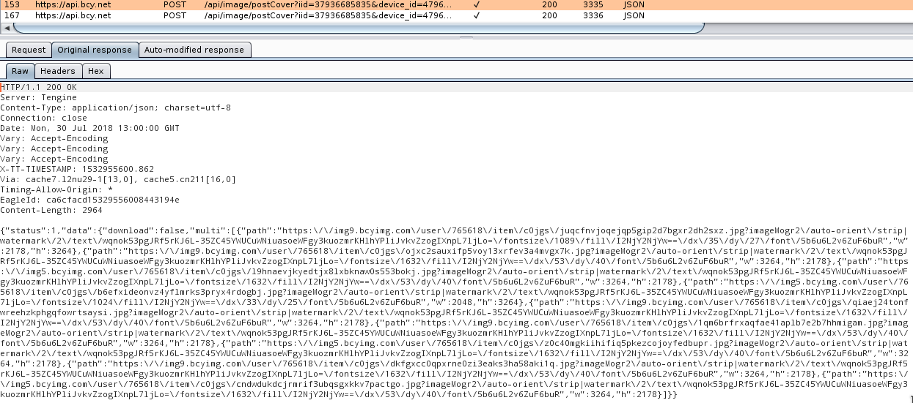
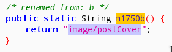
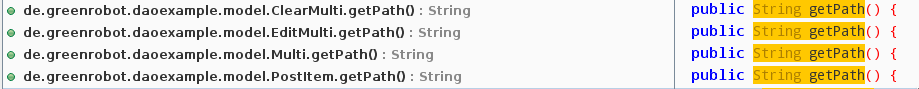

最近吃饭的时候都在刷半次元，Cosplay区太多漂亮的小姐姐，可惜图片加了水印，并且有的图片不允许下载，不能方便随时欣赏，太煞心情了。
半次元使用了HTTPS通信，以及使用了证书绑定（HPKP），通过使用Xposed框架的JustTrustMe插件，可以绕过证书验证。
于是使用BurpSuite抓包。

分析Response可以得知，download为false是禁止下载的标识。图片的路径添加了imageMogr2后缀，即七牛云的高级图片处理，因为这两个内容都是写死在HTTP响应里的，所以只hook响应内容也是一个不错的方法。
使用JADX-GUI打开半次元的APK，发现代码被混淆，网络请求使用了Volley框架。
查阅官方文档，实现一个请求需要设置RequestQueue，然后使用onResponse处理响应事件。
1 2 3 4 5 6 7 8 9 10 11 12 13 14 15 16 17 18 19 20 21 22 23 24 25 26 27 28 29 30 31 32 33 34 35 RequestQueue mRequestQueue; Cache cache = new DiskBasedCache(getCacheDir(), 1024 * 1024 ); Network network = new BasicNetwork(new HurlStack()); mRequestQueue = new RequestQueue(cache, network); mRequestQueue.start(); String url ="http://www.example.com" ; StringRequest stringRequest = new StringRequest(Request.Method.GET, url, new Response.Listener<String>() { @Override public void onResponse (String response) } }, new Response.ErrorListener() { @Override public void onErrorResponse (VolleyError error) } }); mRequestQueue.add(stringRequest);
根据抓包的结果，可以提取出下列关键词。
1 2 3 4 image/postCover download multi path
在这里以URL中的image/postCover为关键词，全局搜索，被封装在m1750b方法里。然后找到调用它的代码。

1 2 3 4 5 6 7 8 9 10 11 12 13 14 15 16 17 18 19 20 21 22 23 24 25 26 27 28 29 30 31 32 33 34 35 36 37 38 public void m6896a (DetailType detailType, final C2271b c2271b) if (detailType != null ) { final Context context = (Context) this .f6216a.get(); if (context != null ) { String str = HttpUtils.f7520b + C0701m.m1750b(); List arrayList = new ArrayList(); arrayList.add(new C2753c("session_key" , C0766a.m2185b(context).getToken())); arrayList.add(new C2753c("id" , detailType.getItem_id())); arrayList.add(new C2753c("type" , detailType.getType())); this .f6217b.add(new C2764l(1 , str, HttpUtils.m8132a(arrayList), new Listener<String>(this ) { final C2296a f6186c; public void onResponse (Object obj) m6855a((String) obj); } public void m6855a (String str) if (C2763k.m8211a(str, context).booleanValue()) { c2271b.mo2699a(str); } else { c2271b.mo2700b("" ); } } }, new ErrorListener(this ) { final C2296a f6188b; public void onErrorResponse (VolleyError volleyError) c2271b.mo2700b("" ); } })); } } }
在com.banciyuan.bcywebview.biz.picshow.ViewPictureActivity2这个类中，找到了名为mo2699a的方法，不过这里是一个闭包，不方便编写hook代码。
1 2 3 4 5 6 7 8 9 10 11 12 13 14 15 16 17 18 19 20 21 22 23 24 25 26 protected void mo2523h () new C2296a(this ).m6896a(this .f6170i, new C2271b(this ) { final ViewPictureActivity2 f6149a; { this .f6149a = r1; } public void mo2699a (String str) try { String string = new JSONObject(str).getString("data" ); this .f6149a.f6172k = (OrignPic) new Gson().fromJson(string, OrignPic.class); this .f6149a.m6848w(); } catch (Exception e) { this .f6149a.m6847v(); } } public void mo2700b (String str) this .f6149a.m6847v(); } }); }
想更优雅一点，直接在要下载的地方hook，而不是每个请求都hook，往下翻找到m6849x方法。
1 2 3 4 5 6 7 8 9 10 11 12 13 14 15 16 17 18 19 20 21 22 23 24 25 26 27 28 private void m6849x () int i = 0 ; while (i < this .f6171j.size()) { Fragment c2290a = new C2290a(); Bundle bundle = new Bundle(); if (i < this .f6172k.getMultis().size() && m6832c(((Multi) this .f6172k.getMultis().get(i)).getPath()).booleanValue()) { bundle.putBoolean("is_big" , true ); this .f6171j.set(i, ((Multi) this .f6172k.getMultis().get(i)).getPath()); this .f6164c.put(i, true ); if (i == this .f6178q) { m6833c(8 ); } } bundle.putString("path" , (String) this .f6171j.get(i)); bundle.putInt("index" , i); bundle.putSerializable("uname" , this .f6180s); bundle.putBoolean("water_mark" , this .f6181t); c2290a.setArguments(bundle); this .f6169h.add(c2290a); i++; } this .f6165d.setAdapter(new C2282a(this , getSupportFragmentManager())); this .f6165d.setCurrentItem(this .f6178q); this .f6179r = this .f6171j.size(); this .f6166e.setText((this .f6178q + 1 ) + "/" + this .f6179r); this .f6166e.setVisibility(0 ); }
在上面这个方法中，并不是用setPath这种方式赋值，而是先放入一个bundle对象中，再批量给属性赋值。如果在这里hook，每次赋值都要判断，会非常不优雅。

1 2 3 de.greenrobot.daoexample.model.Multi.getPath() de.greenrobot.daoexample.model.PostItem.getPath() de.greenrobot.daoexample.model.OrignPic.isDownload()
先使用Frida验证一下hook这些方法是否可行，这台电脑还没装Frida，先安装一下。
1 2 3 sudo pip install frida-tools wget https://github.com/frida/frida/releases/download/12.0.7/frida-server-12.0.7-android-arm64.xz xz -d frida-server-12.0.7-android-arm64.xz
在安卓设备上运行Frida Server
1 2 adb push frida-server-12.0.7-android-arm64 /data/local /tmp adb shell su -c "/data/local/tmp/frida-server-12.0.7-android-arm64"
使用frida-ps查看进程名称
1 2 frida-ps aU | grep banciyuan 半次元 com.banciyuan.bcywebview
编写调试脚本，hook并修改逻辑，输出为bcy.js。
1 2 3 4 5 6 7 8 9 10 11 12 13 14 15 16 17 18 19 20 21 22 23 24 25 setTimeout(function ( Java.perform(function ( var pathRe = /\?imageMogr2.*$/g ; var Multi = Java.use("de.greenrobot.daoexample.model.Multi" ); Multi.getPath.implementation = function ( var path = this .getPath().replace(pathRe, '' ); console .log(path); return path; } var PostItem = Java.use("de.greenrobot.daoexample.model.PostItem" ); PostItem.getPath.implementation = function ( var path = this .getPath().replace(pathRe, '' ); console .log(path); return path; } var OrignPic = Java.use("de.greenrobot.daoexample.model.OrignPic" ); OrignPic.isDownload.implementation = function ( console .log(this .isDownload()); return true ; } }); }, 0 );
运行调试脚本
1 frida -U -f com.banciyuan.bcywebview -l bcy.js --no-pause
普通预览存在水印，但是原图图片水印已经去除，已经绕过下载限制，并且实际保存的图片没有水印。
直接贴代码
1 2 3 4 5 6 7 8 9 10 11 12 13 14 15 16 17 18 19 20 21 22 23 24 25 26 27 28 29 30 31 32 33 34 35 36 37 38 39 40 41 42 43 44 45 46 47 48 public class Main implements IXposedHookLoadPackage @Override public void handleLoadPackage (final XC_LoadPackage.LoadPackageParam loadPackageParam) throws Throwable if (!loadPackageParam.packageName.equals("com.banciyuan.bcywebview" )) return ; findAndHookMethod("de.greenrobot.daoexample.model.Multi" , loadPackageParam.classLoader, "getPath" , new XC_MethodReplacement() { @Override protected Object replaceHookedMethod (MethodHookParam param) throws Throwable try { String path = (String) XposedHelpers.getObjectField(param.thisObject, "path" ); int imageMogrIndex = path.indexOf("?" ); if (imageMogrIndex > 1 ) { path = path.substring(0 , imageMogrIndex); } return path; } catch (Throwable t) { XposedBridge.log(t); return "" ; } } }); findAndHookMethod("de.greenrobot.daoexample.model.PostItem" , loadPackageParam.classLoader, "getPath" , new XC_MethodReplacement() { @Override protected Object replaceHookedMethod (MethodHookParam param) throws Throwable try { XposedBridge.log("PostItem" ); String path = (String) XposedHelpers.getObjectField(param.thisObject, "path" ); int imageMogrIndex = path.indexOf("?" ); if (imageMogrIndex > 1 ) { path = path.substring(0 , imageMogrIndex); } return path; } catch (Throwable t) { XposedBridge.log(t); return "" ; } } }); findAndHookMethod("de.greenrobot.daoexample.model.OrignPic" , loadPackageParam.classLoader, "isDownload" , new XC_MethodReplacement() { @Override protected Object replaceHookedMethod (MethodHookParam param) throws Throwable return true ; } }); } }
附上GitHub链接
https://github.com/gorgiaxx/bcyhelper
Volley overview Xposed Framework API Frida JavaScript API